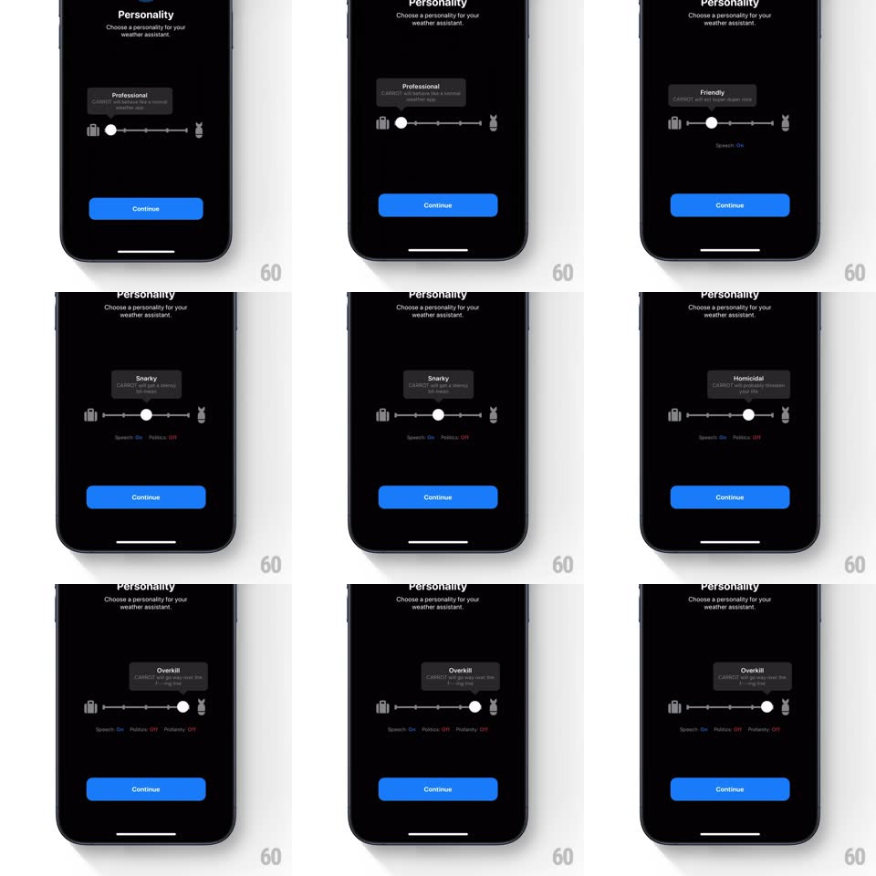

Media
Frame-by-frame

Rebuild this interaction 1:1: CARROT's personality slider - drag between a suitcase and a rabbit to pick the weather assistant's personality (Professional / Friendly / Snarky / Homicidal / Overkill) while a tooltip bubble above the thumb springs between names and trait toggles update below.

Rebuild this interaction 1:1: CARROT's personality slider - drag between a suitcase and a rabbit to pick the weather assistant's personality (Professional / Friendly / Snarky / Homicidal / Overkill) while a tooltip bubble above the thumb springs between names and trait toggles update below.
## Integration
Integration: stack-agnostic spec - springs given as stiffness/damping, timed motions as duration + curve; map every value to your framework and animation library of choice.
## Scene
Black screen: "Personality" title, "Choose a personality for your weather assistant" subline; a horizontal slider with a suitcase glyph at the left end and a rabbit glyph at the right, tick stops between; a dark tooltip bubble floats above the thumb showing the personality name + one-line description; small trait text below ("Speech: On Politics: Off Profanity: Off"); blue Continue button.
## Motion spec
Pattern: stepped personality slider with springy tooltip.
- Drag the thumb: it tracks 1:1; the tooltip bubble follows glued above it.
- Passing a stop: the thumb snaps to the detent (spring ~380/20 with a small overshoot), a haptic tick fires, and the tooltip swaps content - old name slides up and out, new name slides up and in (180ms) while the bubble re-sizes with a spring (~360/22) to fit the description.
- The trait line updates per personality (Profanity: Off -> ON in red for Overkill) with a 150ms crossfade.
- End glyphs react: the rabbit wiggles at the extreme right, the suitcase stays stoic at left.
- Continue is always lit - the slider is flavor, not a gate.
## Calibration
- Five stops exactly; the tooltip is always visible, not just while dragging.
- Personality order runs tame -> unhinged left to right; the description text gets progressively darker in tone.
## Reduced motion
Thumb jumps stop-to-stop; tooltip crossfades.
## Don't miss
- The tooltip's tail stays pinned to the thumb's crown as the bubble resizes.
- "Homicidal" and "Overkill" sit at the rabbit end - the rabbit is the chaos anchor.